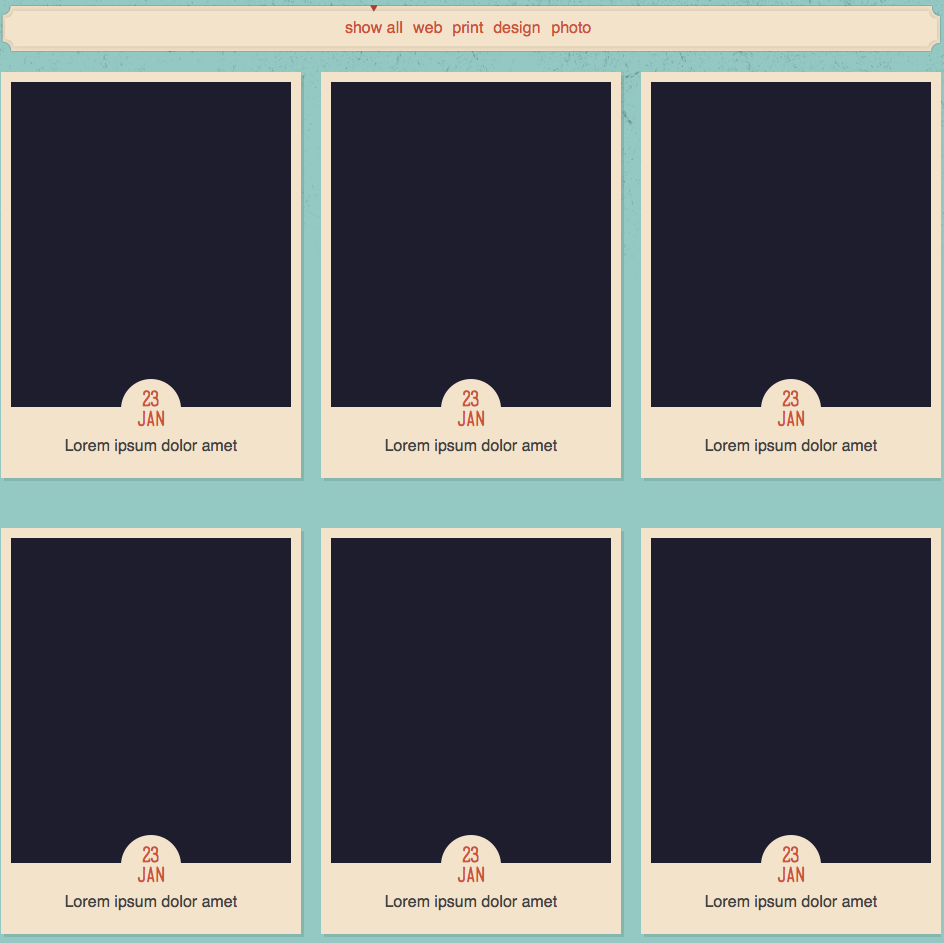

Portfolio

Filter
The background images used are:
img/filter.png
img/filter-arrow.png
Links
Text decoration none
Margin right is 5px
Color #cb5432
Clicking a link should filter the results that are displayed you can custom write your own or use a jQuery plugin
Portfolio Area
This section uses the same styling as the homepage.